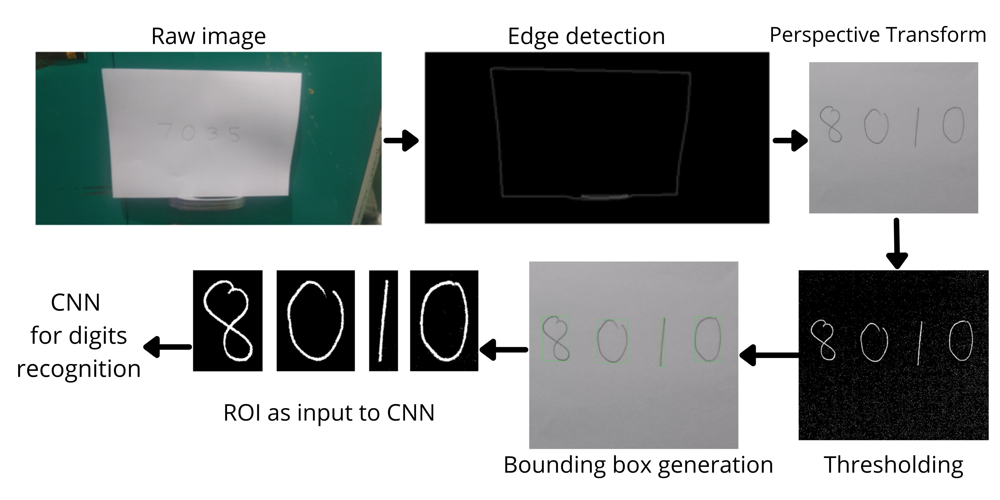
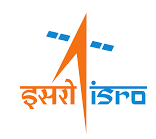

|
I am a Research Assistant at the Computational Imaging Lab of Indian Institute of Technology, Madras. My advisor is Dr. Kaushik Mitra. Prior to this, I have had the privilege of working with Dr. Glenn Orton as a Research Fellow at the NASA Jet Propulsion Laboratory under the Juno mission. I previously worked as a Research Intern with Ms. Thara Nair at Indian Space Research Organisation, Hyderabad. I completed my undergrad in Electronics and Communication Engineering at the Coimbatore Institute of Technology. |
{kind=link}
|
I'm interested in computer vision, machine learning, and image processing. Much of my research is about inferring the physical world (shape, motion, depth, color, light, etc) from images and videos. I also like to focus on interdisciplinary research, applying vision-based methods to innovatiely tackle problems in different fields. More recently, I have been working on perception in self-driving vehicles. |

|
Tejoram Vivekanandan, Glenn Orton, Thomas Momary [Project Report] To determine the correlation between the color change, the altitude and ultraviolet exposure of the storm’s particles, near-infrared images of Jupiter with Oval BA present were examined. After some calibration and preprocessing the images during red, white and the transition phase were compiled for different wavelengths. The reflectivity of the vortex at each wavelength was corrected for dependence on angles of emission and incident sunlight using the Minnaert function. Results confirm a behavior that is consistent with a change in altitude of particles between the red and white epochs. |

|
Tejoram Vivekanandan, E.Venkateswarlu, Thara Nair, Vinod M Bothale [Project Report] In this study, a shadow restoration approach for high resolution satellite images is implemented. This approach detects the shadow area and segments the image into regions with respect to the land surface type. Then, shadow restoration is applied for every region considering the degree of correspondence between shadow and neighbouring non-shadow regions. The results show that the shadow regions processed using this approach have better appearance and are highly compatible with their surrounding non-shadow regions. In addition, the final accuracy is more than those of the conventional approaches. |

|
Tejoram Vivekanandan, Jenisha Priscilla.J, Swetha,B.Bhuvaneshwari, Dhanalakshmi.S [Project Report] In this project, a prototype of an intelligent self-driving vehicle has been developed with a variety of machine learning algorithms. This prototype was developed on a Raspberry Pi and has been able to predict the direction and control the vehicle based on these decisions. The prototype has also been trained to detect and obey traffic signs and navigate by avoiding obstacles. To achieve this, the images of a track collected from a Pi camera were used to train different models of neural networks and the performance of each model was tested. Haar cascade classifier based stop sign detection signals the vehicle to stop. |
|  |
Tejoram Vivekanandan [Github Link] In this project, handwritten numerics from a live video input was recognized and matched with telephone directory to find the name associated with the detected telephone number. Image background was removed through edge detection, localization and perspective transform. After Thresholding, ROI bounding boxes were computed. Finally digits were recognized by deep neural network through classification. |
|
|
Sep '21 |
I am joining the Computational Imaging Lab of Indian Institute of Technology, Madras. I'll be working with Dr. Kaushik Mitra. | ||
Jan '21 |
Shadow Detection and Restoration in VHR Satellite Imagery got accepted for peer review in Journal of the Indian Society of Remote Sensing. | ||
Aug '20 |
Super excited to be selected for the JPL Visiting Student Research Program. I'll be working with Dr. Glenn Orton at the Planetary and Exoplanetary Systems Department at NASA Jet Propulsion Laboratory from September. | ||
Nov '19 |
I'll be starting my internship with Ms. Thara Nair at Indian Space Research Organisation, Hyderabad. |

|
 |

|

|